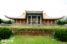
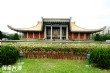

國父紀念館
國父紀念館位在台北市信義區，是為紀念國父孫中山先生的偉大事蹟及革命情操， 於民國五十三年籌建，並於民國六十四年竣工完建，由王大閎建築師所設計，佔地面積三萬五千坪，為仿唐式飛簷式宮殿建築，周圍擁有中山公園及翠湖，草木扶疏綠意盎然，近年來也舉行燈會活動，夜晚時刻也相當美麗。
國父紀念館位在台北市信義區，是為紀念國父孫中山先生的偉大事蹟及革命情操， 於民國五十三年籌建，並於民國六十四年竣工完建，由王大閎建築師所設計，佔地面積三萬五千坪，為仿唐式飛簷式宮殿建築，周圍擁有中山公園及翠湖，草木扶疏綠意盎然，近年來也舉行燈會活動，夜晚時刻也相當美麗。
